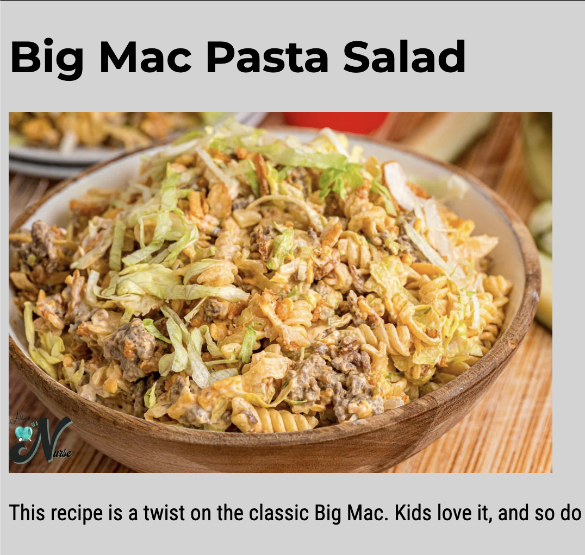
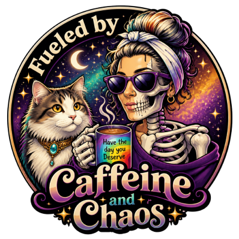
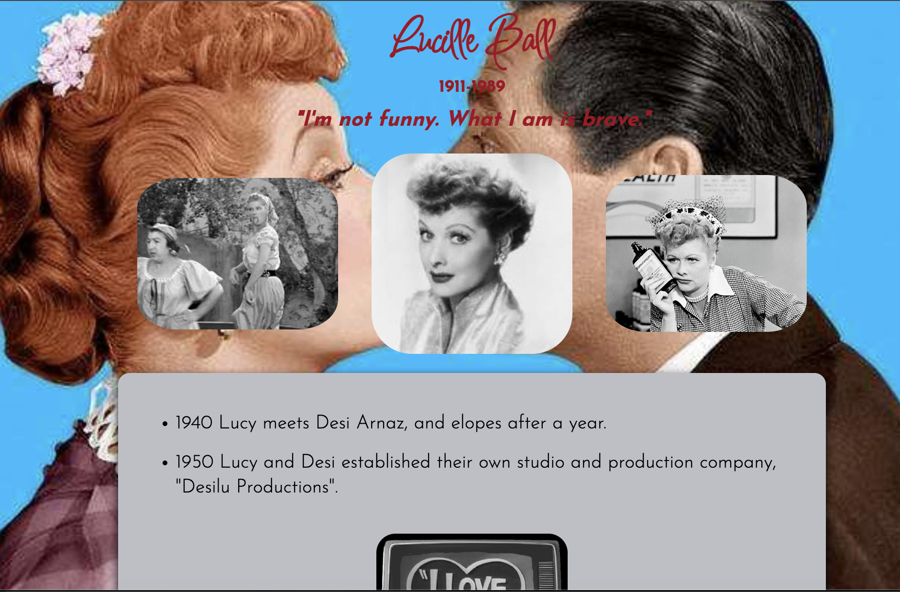
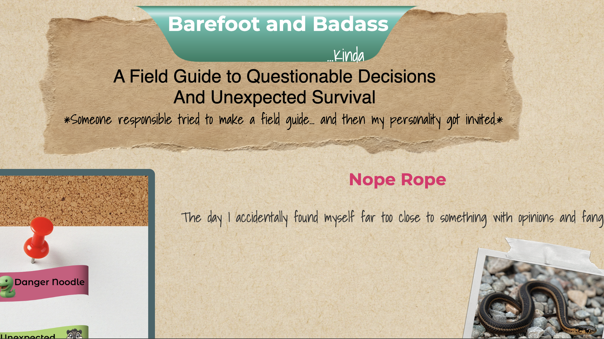
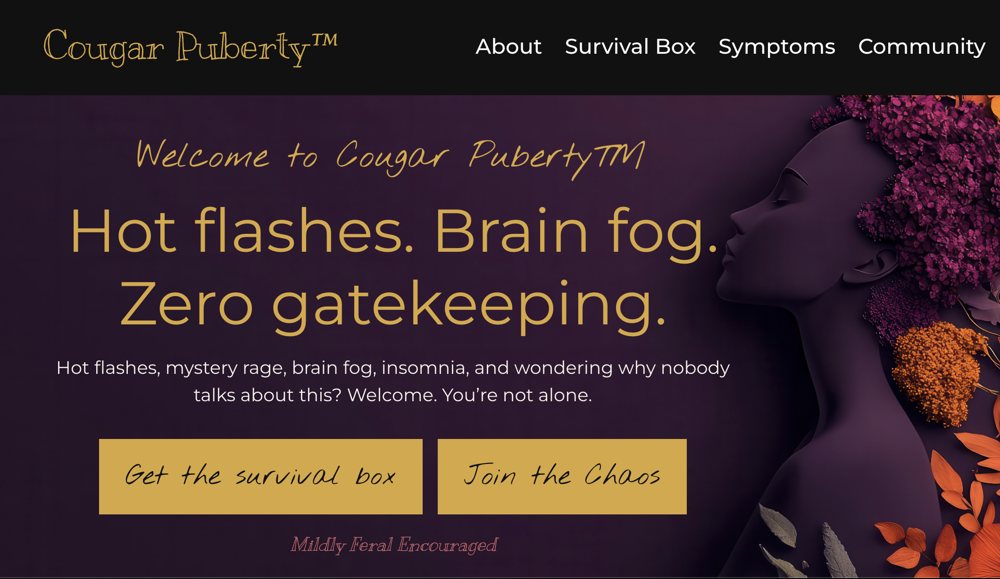

Made From Scratch
HTML • CSS • Foundations

Learning the fundamentals of web development through semantic HTML, structure, and styling.
Take a Peek
Proof That the Chaos Is Organized
Designer. Maker. Problem Solver. Building thoughtful designs through creativity, craftsmanship, technology, and a stubborn determination to figure things out.
The organized chaos comes free of charge.
See My WorkHTML • CSS • Foundations

Learning the fundamentals of web development through semantic HTML, structure, and styling.
Take a PeekResponsive Web Design • Development

A responsive website honoring Lucille Ball, built while learning that what works perfectly in a mockup sometimes has other plans in CSS.
Take a PeekWeb Design • Storytelling • Development

A collection of unbelievable-but-true stories, wrapped in a design that feels part field guide, part digital scrapbook.
Take a PeekBranding • UI Design • Product Concept

A menopause survival concept built around humor, community, and the comforting realization that you're not actually losing your mind.
Take a PeekHi, I'm Jen.
I'm a designer, maker, and lifelong problem solver currently studying design while balancing family life, work, and a suspicious number of creative projects.
My background in sewing, crafting, and building things by hand has shaped the way I approach design: thoughtfully, practically, and with a focus on creating experiences that are both useful and memorable.
When I'm not designing, I'm probably making something, learning something, or convincing myself I definitely need to start one more project.
Curious how this project came together? Take a peek behind the scenes at the ideas, challenges, lessons learned, and the occasional creative detour.
Read the Reflection